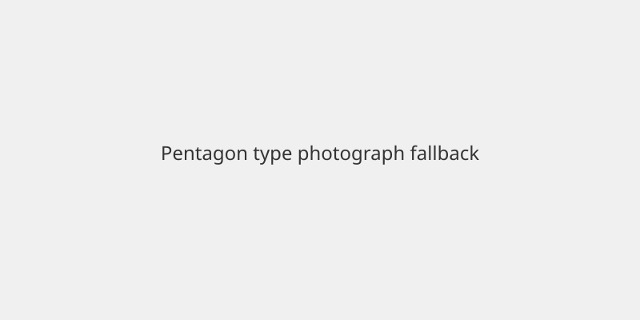

United States · Congress · 9 November 2026
Jeffries says he is a hard yes on privileged resolution to impeach Defense Secretary Hegseth

What is agreed across desks
House Minority Leader Hakeem Jeffries stated on ABC’s This Week that he is a “hard yes” on a privileged resolution introduced by Republican Rep. Thomas Massie containing eight articles of impeachment against Defense Secretary Pete Hegseth. Massie has indicated he will force consideration as the lame-duck session begins on 9 November. The articles, originally filed in September, allege actions related to the Iran conflict and other military operations without required congressional authorization. Democrats will not control the House until the new Congress is seated in January, so any vote this month occurs under the existing Republican majority. Hegseth has publicly rejected the effort as a sham. Conviction and removal would require a two-thirds vote in the Senate.
What is only a quote
Jeffries’ characterization that Hegseth “abused his power” and “engineered this reckless and costly war of choice in Iran” is his political assessment. Massie’s assertion that sufficient Republicans will support the resolution is a prediction, not a recorded vote. Hegseth’s statement that the articles will not work against him is his response.
Mechanism and context
A privileged resolution in the House must be considered within two legislative days once properly raised. The House may vote on the resolution itself or on a motion to table it. Impeachment of a cabinet officer is a constitutional process that has been used rarely. The Iran conflict and associated costs have been cited by both the president and the vice president as factors in the midterm results. The current House majority retains the power to schedule or dispose of the measure before the January transition.
What the story is not
No vote has occurred as of 9 November. The resolution has not passed the House. Hegseth has not been removed from office. The articles do not themselves establish the legal conclusions they allege; those would be tested in any Senate trial.

Source articles and scores
| Outlet | Headline | T | N | C |
|---|---|---|---|---|
| BBC | Top House Democrat 'a hard yes' on impeaching Hegseth | 95 | 0 | 100 |
| Newsweek | Jeffries backs Republican-led Hegseth impeachment effort: He’s "got to go" | 93 | -5 | 95 |
| USA Today | Pete Hegseth says he will fight impeachment, defying calls to resign | 94 | 0 | 98 |